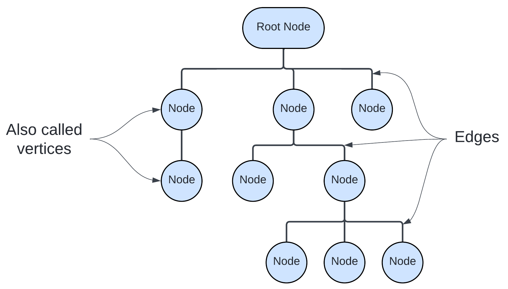
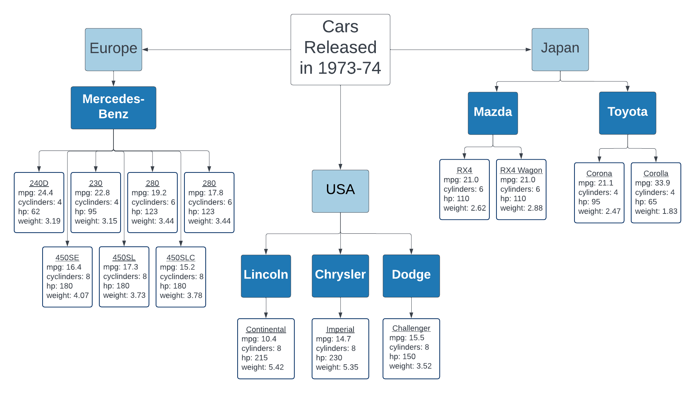

1 Data
Quantities, characters, or symbols on which operations are performed by a computer, considered collectively. Also (in non-technical contexts): information in digital form.
- Oxford English Dictionary
If you are doing research, chances are you are going to be working with data in some form or another. Even if you do not use traditional rows and columns, you are certainly working with some form of information. And if you have translated information into a form that is more easily shared or stored for later use, you are working with data. Information becomes data when we give it some sort of structure. That could be the previously mentioned rows and columns, or something more human readable, like the grammar and syntax of natural language.
One of the challenges of working with data is figuring out the best way, or at least a good way, to store it. Thankfully, we have mostly left behind the 20th century’s favorite way of storing data: paper in filing cabinets. Our new methods are definitely less flammable but also have a higher barrier to entry. There are many more types of data stores available now as well. This means you will need to make a decision on which one to use. Ultimately, the best way to store your data will depend on the data you want to store and the questions you want to ask with it.
When describing data we generally talk about two main characteristics: data type and data structure.
1.1 Data Types
Your data’s type tells the computer what sorts of operations make sense. Common data types include:
- integers
- decimal
- floating point numbers
- characters (text)
- Boolean values (TRUE and FALSE)
- Dates and times
Data type also influences how data is stored. Unlike other characteristics we will discuss later, an individual data point can have a type.
Data type is not necessarily inherent to a piece of information, though it is often strongly suggested. For example, you can store the value of 1 as the integer 1, the decimal 1.0, the text “1”, the Boolean TRUE, or the date 1900-01-02. The underlying information is the same (1), but the computer will treat each of these pieces of data differently. It will not allow you to add “1” to another number, and it may have issues combining the integer or decimal 1.0 with text. Text itself can only be stored as characters.
1.2 Data Structures
A data structure is a collection of data values, the relationships among them, and the functions or operations that can be applied to the data.
Wikipedia
Unlike with data types, a single piece of data cannot have a data structure. This is because data structure is about capturing relationships between data points, there isn’t any meaningful information to be gained from the relationship of a data point with itself. We will discuss five of the most common data: tabular/columnar, graph, tree, categorical/relational, and spatial data. In practice, data often exhibits traits from multiple data structures.
As mentioned previously, data is information translated into a form to store for later use. The type of information you work with does not dictate the type of data structure you must use. However, some types of information lend themselves to particular data structures over others.
When trying to decide what data structure to use to represent information from your research, the key is to focus on what sorts of questions you would like to ask. Each data structure will make some types of questions easier to ask and others harder. If you want to ask disparate types of questions, you may need to represent your data using multiple structures. Because data structure has such a large impact on how you interact with your data, the structure you choose is just as important as the analysis you do afterward.
1.2.1 Columnar/Tabular
Tabular or columnar data is made up of rows and columns, collectively referred to as a table. By convention, each row represents an observation, and each column a measurement or aspect of that observation. Tabular data is incredibly common, especially in the sciences. Many researchers, regardless of field store at least some of their data in tabular form. Tables work well when all of the objects in your study can be summarized with the same set of characteristics.
The table below contains data from the US magazine Motor Trend in 1974. In the table below, each row is an observation of a car model released between 1973 and 1974. The magazine recorded the make, model and origin of each car and measured the car’s fuel efficiency (mpg), horsepower, weight, and number of cylinders in the engine.
## mpg cylinders horsepower weight manual origin
## Mazda RX4 21.0 6 110 2.620 1 Japan
## Mazda RX4 Wag 21.0 6 110 2.875 1 Japan
## Mercedes-Benz 240D 24.4 4 62 3.190 0 Europe
## Mercedes-Benz 230 22.8 4 95 3.150 0 Europe
## Mercedes-Benz 280 19.2 6 123 3.440 0 Europe
## Mercedes-Benz 280C 17.8 6 123 3.440 0 Europe
## Mercedes-Benz 450SE 16.4 8 180 4.070 0 Europe
## Mercedes-Benz 450SL 17.3 8 180 3.730 0 Europe
## Mercedes-Benz 450SLC 15.2 8 180 3.780 0 Europe
## Toyota Corolla 33.9 4 65 1.835 1 Japan
## Toyota Corona 21.5 4 97 2.465 0 Japan
## Lincoln Continental 10.4 8 215 5.424 0 USA
## Chrysler Imperial 14.7 8 230 5.345 0 USA
## Dodge Challenger 15.5 8 150 3.520 0 USAOther examples of data sets that lend themselves to a tabular data structure include California almond yields (lb/acre) for farms around the state, climate data over the past 50 years, snow accumulation (inches) for Lake Tahoe, and biomarkers for people participating in a study on a chronic illness.
Tabular data lends itself to answering questions about the average value or spread of a particular measurement over the entire dataset. It can also help investigate trends in a particular variable, or how two variables relate to each other. In the case of the car fuel efficiency data, we could ask about the relative fuel efficiency of cars from different parts of the world or if there is any relationship between a car’s weight and its horsepower. The tabular data structure also makes sorting observations very easy.
1.2.2 Trees
Trees are another commonly used data structure. Tree structured data explicitly capture hierarchical relationships between entities. Trees are made of up nodes (or vertices) which represent entities in the data, and edges which represent relationships between those entities. The number of edges separating an entity from a common root node defines that entity’s place in the hierarchy. When viewing tree structured data on a computer, it often looks very “nested”, like sections and subsections of a document. In fact, tree data is sometimes referred to as document structured data because of this.

In general, tree data facilitates asking questions about particular subsets of the data. For example, you might want to know how closely two entities are related, which branches of the tree have the most nodes, or all of the observations that fall under a particular subtree.
Family trees are a common example of tree structured data. In family trees, the nodes represent people in the family. Horizontal lines represent marriages or couplings, and vertical lines represent a connection to offspring. In the family tree of the Tutor Dynasty in England below, it is easy to determine things like who had the most wives (Henry VIII), which people shared a generation and who was the last member of the dynasty (James I of England). Questions like the what was the average age at death for the Tudors would be harder to answer.

We can also represent the car fuel efficiency data with a tree data structure. This makes it much harder to answer some of the questions mentioned in the previous section. On the other hand, the tree structure makes it very easy to see which car manufacturer produced the greatest number of models in 1973-74 and how many different models came out of Japan during that time period.

1.2.3 Graphs
Graph data is similar to tree data in many ways. It also explicitly captures information about relationships between entities using nodes and edges. However, unlike trees, graph data sets have no inherent center or root node, and there is no implicit hierarchy or nesting. Additionally, the relationships between the vertices can be directional, and that direction does not have to be consistent throughout the graph.

Graph structured data tends to be more common in the social sciences and humanities. One of the most ubiquitous examples of a graph is the social network. Transportation data, like roads and flight paths, also lend themselves to the graph structure. In the digital world, we can use graphs to map out the link connections between Wikipedia pages, as seen below with Abraham Lincoln.
Graphs make it easy to ask questions about connectivity. For example we might want to know how many flight connections we will need to make between Honolulu, Hawaii and Cairo, Egypt, or how many degrees of separation there are between Abraham Lincoln and Hitler on Wikipedia. We can also ask about which parts of the graph are the most connected and which are the least connected.
1.2.4 Categorical - Relational
In categorical data, category membership is the organizing principle of the data structure. Entities can have membership in multiple categories, and relationships are defined between categories instead of the entities themselves. As such, relationships tend to represent complex processes rather than individual entities.
1.2.5 Spatial
In spatial data, the organizing principle is location. This can be geographic location (ex latitude/longitude) or relative location on an arbitrary grid (ex. [2, 4]). Data can either be continuous, like a sheet over a landscape, or discrete like points on a map. In fact, map making is one of the most common uses of spatial data. However, we can also ask as questions like whether points are clustered more closely than we would expect, and whether we can use nearby data to predict values for places where we don’t any.